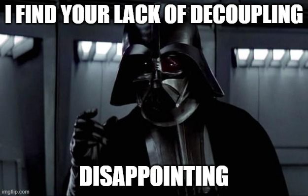

With some topics, you reliably get experienced software developers arguing on both sides of said topic. When this occurs frequently for a particular topic, I believe that it is that both sides are simultaneously right and wrong. This idea can be generalized but let's take the principle of YAGNI. How can both sides be right and wrong? Well, because it depends.
The story so far
 When one developer says YAGNI, it is because she has been in a situation where a solution has been over-engineered, resulting in a complicated mess that was difficult to maintain. On the other hand, the developer pushing against YAGNI is probably trying to build some flexibility into the system. He has been in a situation before where the business comes with some last-minute "small change" that completely invalidates the current design. This resulted in a massive amount of work that threw the delivery date out or pressured him into crunching over a weekend.At this point, I would like to state that I err toward YAGNI. It is a principle though, not a law of nature. It is meant to be a guide toward better outcomes. In my experience, the systems that are easiest to change are those that are easy to understand. The YAGNI principle pushes toward short delivery cycles, where delivering earlier and getting feedback is more valuable than extra flexibility in the system that may never be needed. The underlying assumption here is that we cannot know the future, so get value out now.
These are not the contexts you are looking for...
Now let me switch gears a bit and put my architecture hat on. Architecture is about enabling business capabilities via software. It answers questions like "How much effort is it to add feature X?" or "Can we handle a 10x in customers next month?".
These are questions about a future state, so YAGNI is not the correct way to think about architectural questions. Instead, in system architecture, we are making tradeoffs between complexity and future possibilities. These design choices are bets on what is likely to stay the same and what might change. A good design will make tradeoffs that allow the parts that are likely to evolve, to do so elegantly.
So why am I talking about architecture in a YAGNI post? When developers are arguing over the application of YAGNI, they have different hats on. The easiest way to come together is to identify what the context of the discussion is. Are they talking about system architecture? Then we are in the realm of trade-offs. Are we talking about a component in code? Then YAGNI is probably the safer bet since changes are more frequent and unpredictable. The cost of change is much smaller than large architectural changes.
Conclusion
Striving for a straightforward system architecture is a worthy goal. Sometimes sacrifices are made to provide future opportunities. At the level of code design, YAGNI becomes a far more compelling principle. The above is illustrative of how people can disagree about something because they are talking about something in different contexts. So the next time you are involved in a disagreement, check your interlocutor's context. You might find you both actually agree when you get specific.